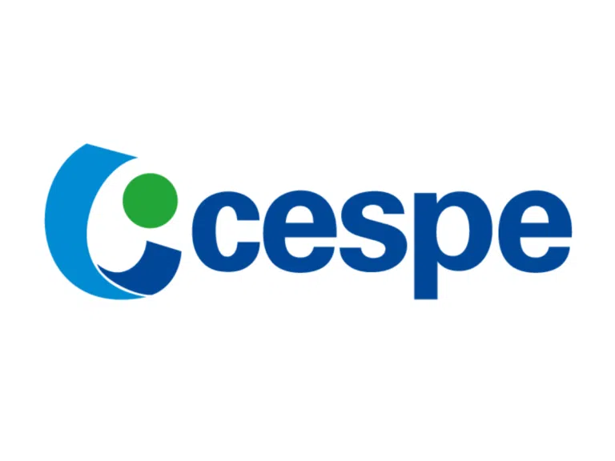
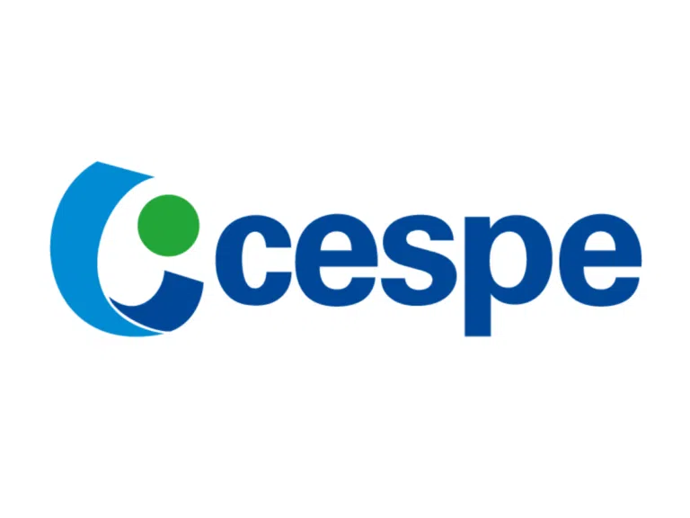
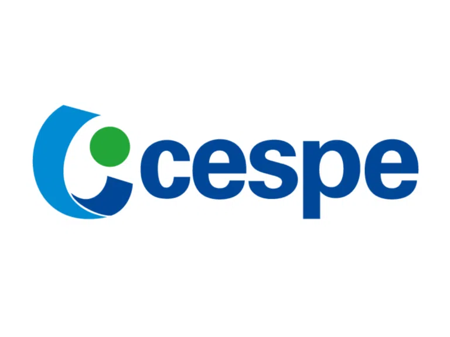

DAQ ESSENCIAL
Aprenda com a prova, na prática
Você estuda tudo… menos o que realmente cai? Descubra o método que transforma cada questão em um mapa direto para sua aprovação.
Aprovado em bancas como:
 




Método Comprovado